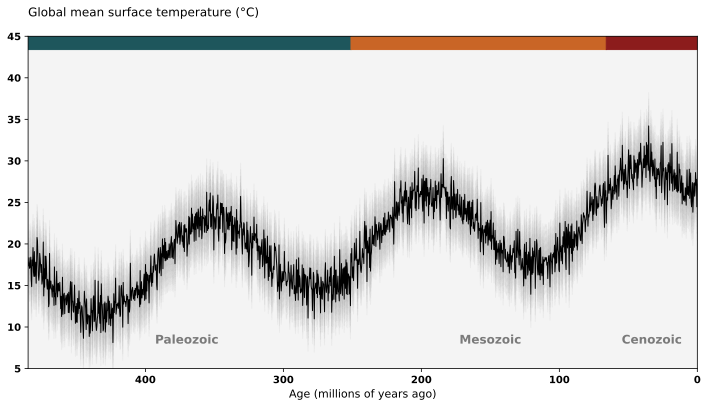
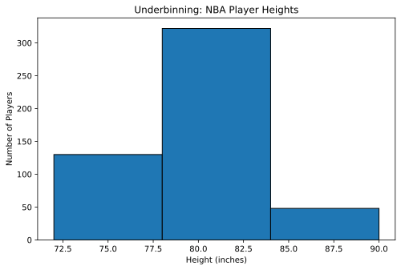
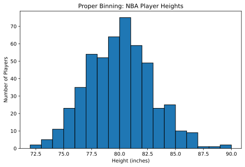
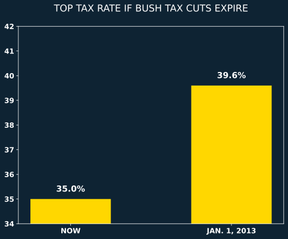
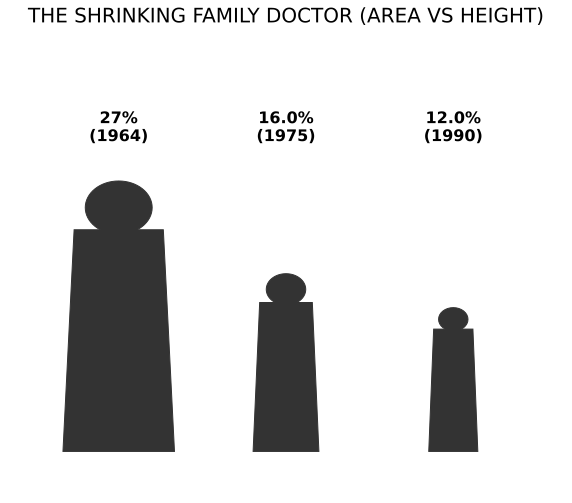
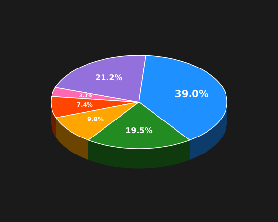

Full axis: the difference looks proportional.

Chart recreated from original in Python by the authors.
Low smoothing: short-term fluctuations are still visible.

Chart recreated from original in Python by the authors.
No tilt: slices are easier to compare by their actual angle.

Chart recreated from original in Python by the authors.